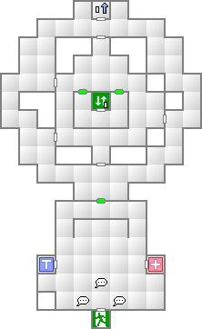
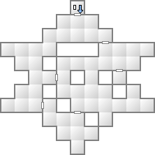
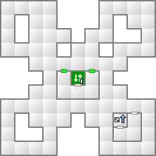
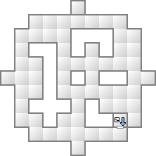
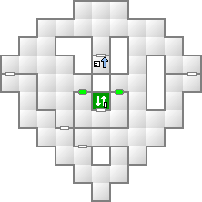
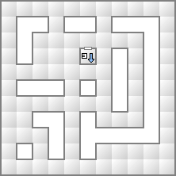
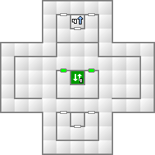
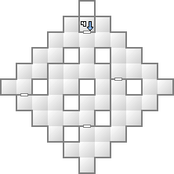
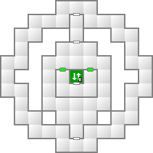
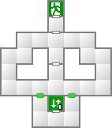

www Hackers
湾岸倉庫クリア後から利用可能になる施設。シーアークでは攻略したダンジョンに出現した悪魔が出現するので、交渉して材料にしたり、経験値やお金やアイテムを稼ぐのに適している。
* 厳密にはアルゴンNSクリア後から入ることはできるが、悪魔の出現する場所には進入することができない。
エレベーターの存在する階にある扉は、ある程度ゲームが進行しないと開かないようになっている。
悪魔出現場所を参照。
 
 
 
 

